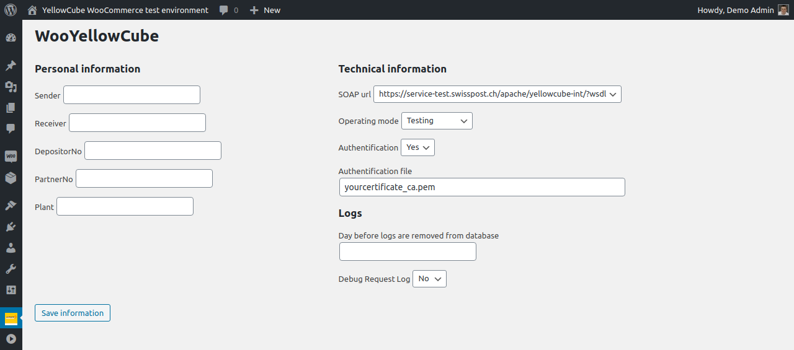
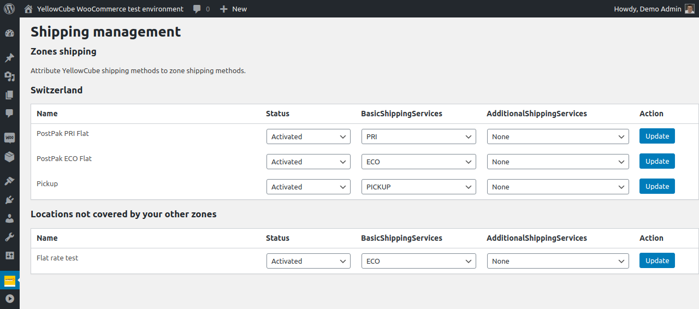

Configuration
Basic configuration
You will find the YellowCube configuration section under the WooYellowCube main menu item in the side administration toolbar.
The fields below Personal informations need to be filled out with the information you have received by the YellowCube customer service. The field "Sender" is case sensitive.
The fields below Technical information need to be setup.
- SOAP url: URLs of SOAP services for different operating modes. https://service.swisspost.ch/apache/yellowcube/?wsdl should be used for production websites.
- Operating mode: Choose between Testing and Production
- In Testing mode orders are processed virtually. Documents, labels etc. are printed out and scanned. This mode is for testing purposes.
- Production mode needs to be set when the website is live and working.
- Development mode is only intended to be used by developers. YellowCube users should never use this mode.
- Authentification: Should be enabled if you are using certificate file to authenticate with YellowCube.
- Authentification file: If the certificate authentication is used provide path to the certificate file on the server in this field (relative to the folder of the WooYellowCube extension).
Define how many days logs will be kept in the database in the Logs section. We suggest you start with 30 days and then reduce it if the amount of log items becomes an issue.
Note that you need to provide the IP address of your WooCommerce Shop to YellowCube for giving your shop access to YellowCube. This can also affect the configuration for any staging/development envirnoments. Consult your dedicated service provider for more informations about that.

Every time you save the settings form all states and caches are cleared. Background processes will re-run with the next trigger. This reduces issues when switching between Testing / Production and different accounts. However product registration states remain stale.
Limitation: Do NOT connect multiple shop instances to the same YellowCube account as WAR request (hourly cron containing confirming shippings with track & trace) can not be shared.
Production go live
Once you are ready for production use, change the operating mode settings accordingly:
Note that all previously registered articles need to be sent again to registration in production. There is no bulk operation yet to automate this process.
Limitation: If a previously successfully submitted product is not resent after switching the operating mode or account, order submissions containing such a product will fail.
Shipping
YellowCube relies on shipping zones so you should configure them according to your business logic first. If unsure how to do that check the relevant section of the WooCommerce documentation pages.
Once you have configured shipping zones and added the desired shipping methods to them you will be able to configure YellowCube specific configuration for each of them. You will be able to do that on the configuration page that can be found by navigating to WooYellowCube -> Shipping:

The page lists all shipping methods (grouped by zones) and allows you to configure YellowCube for each of them separately. YellowCube can be enabled by selecting Activated in the Status dropdown for the relevant shipping zone/method.
Orders still can be manually sent to YellowCube on each order detail page even if a matched zone is deactivated for YellowCube.
The other two dropdowns (BasicShippingServices and AdditionalShippingServices) allow you to select the YellowCube product that should be used. You will find more detailed information about those in the YellowCube Interface Manual.
Activity Log
Check the activity log to see the activity on your website.